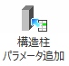
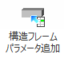
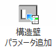
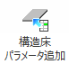
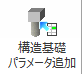

■ 各パラメータ追加ボタン説明
パラメータ追加の詳細については パラメータ追加 を参照してください。
 |
選択した構造柱のファミリに選択したパラメータ（マッピングテーブルで設定したもの）を追加する |
 |
選択した構造フレームのファミリに選択したパラメータ（マッピングテーブルで設定したもの）を追加する |
 |
選択した構造壁のファミリに選択したパラメータ（マッピングテーブルで設定したもの）を追加する |
 |
選択した構造床のファミリに選択したパラメータ（マッピングテーブルで設定したもの）を追加する |
 |
選択した構造基礎のファミリに選択したパラメータ（マッピングテーブルで設定したもの）を追加する |